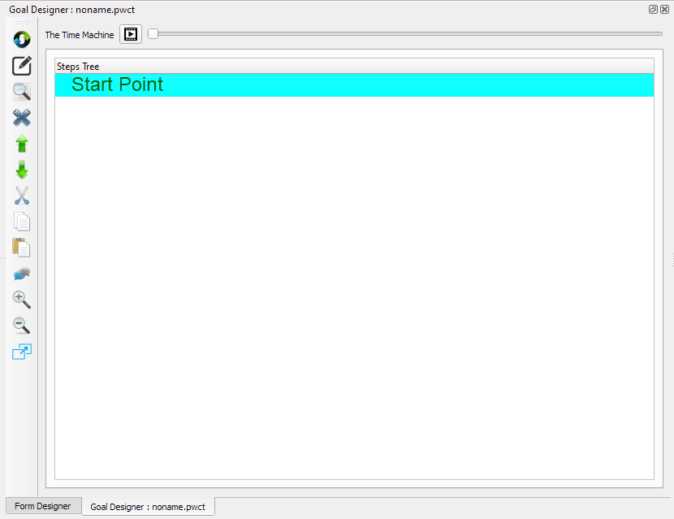
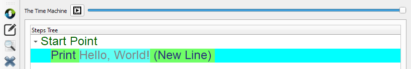

Getting Started¶
In this chapter we are going to learn how to create our first application using PWCT
The Main Window¶
When we run PWCT, The Main Window present the next dockable windows

Components Browser¶
1 - Using the Components Browser, We can select a component to use
2 - Each component could provide an Interaction Page (Data-Entry Window)
3 - The Component lead the steps generation process in the Steps Tree (Inside the Goal Designer)
4 - The Component also generate the Textual source code in the background
5 - We can search in the Components Tree by typing the Component name or some letters in the name
For example, by typing the letter ‘p’ we can find the (Print Text) component

6 - To use the component after selecting it, Press (Enter) or (Double Click) using the Mouse
Project Files¶
Using the Project Files window, We can open visual source files quickly!
For example, We can open the file (Tetris.pwct) which contains the Tetris game!
To run this game we can click on the Run button in the Main Toolbar (Ctrl+F5)


Goal Designer¶
1 - Contains the Steps Tree that represent the logic behind our program
2 - Contains buttons that we can use to control the steps tree
3 - Contains the Time Machine
3.1 - Support running the program in the past
3.2 - Support playing the program as movie
Hello World Program (Using the Mouse)¶
From the Components Browser, Select the (Print Text) component
Then double click using the Mouse
After selecting the component, an interaction page will appears in the Goal Designer
Using this Interaction Page we can determine the text that will be printed on the screen
Type: Hello, World!
Then click the (Ok) button
This will generate the next step in the Goal Designer Window
Now we can run the program and see the program output
To run the program click on the (Run) button from the Main Toolbar

The next output will appears in the Output Window

Hello World Program (Steps Summary)¶
Select (Print Text) from the Components Browser
Enter (Hello, World!) then click (Ok) in the Interaction Page
Click (Run) from the Main Toolbar